Sultanlar Ligi'nin İsim Değişim Tarihçesi
Sultanlar Ligi, Türkiye'deki kadın voleybolunun en üst seviyesi olarak 1984 yılından itibaren Türkiye Voleybol Federasyonu tarafından düzenlenmeye başlanmıştır. Ligin ismi zaman içinde birkaç kez değişiklik göstermiştir. 2008 yılında Aroma ile yapılan sponsorluk anlaşmasıyla, lig 4 yıl boyunca "Aroma Bayanlar Voleybol 1. Ligi" olarak anılmıştır. 2012 yılında ise Acıbadem firması ile 2 yıllık yeni bir sponsorluk anlaşması yapılmış ve ligin adı "Acıbadem Bayanlar Voleybol 1. Ligi" olarak değiştirilmiştir. 2014-2015 sezonundan itibaren ise ligin adı tekrar "Türkiye Bayanlar Voleybol 1. Ligi" olarak kullanılmaya başlanmıştır. 2016 yılı itibarıyla ise lig, "Sultanlar Ligi" adıyla anılmaya başlanmıştır. Bu tarihten sonra, 12 Aralık 2016'da Vestel ile yapılan isim sponsorluğu anlaşması ile lig "Vestel Venus Sultanlar Ligi" olarak adlandırılmıştır. 2020-2021 sezonuyla birlikte, Misli.com firmasıyla yapılan anlaşma sonucunda lig, "Misli.com Sultanlar Ligi" olarak isimlendirilmiştir. En son olarak, 2023-2024 sezonu itibarıyla Vodafone ile yapılan 3 yıllık sponsorluk anlaşması gereği, lig "Vodafone Sultanlar Ligi" olarak anılmaya başlanmıştır.
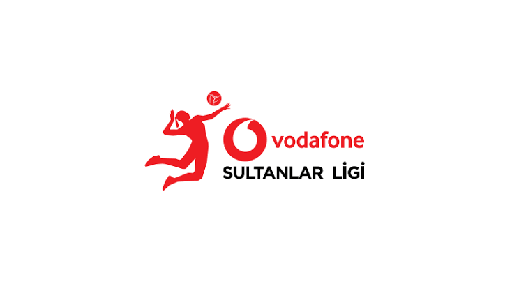 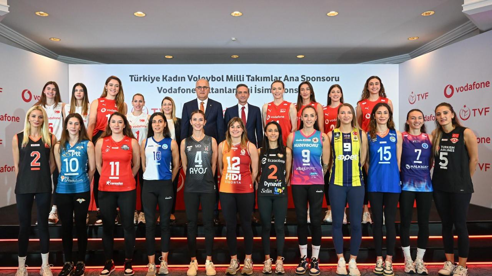Lig Statüsü
Lig Etabını ilk dört sırada tamamlayan takımlar, Play-Off 1. Etap maçlarına katılırlar. Bu etap sonunda, ligin 1., 2., 3. ve 4.'sü belirlenir.
Lig Etabını 5., 6., 7. ve 8. sırada bitiren takımlar ise Play-Off 2. Etap maçlarına katılır. Bu etap sonunda, ligin 5., 6., 7. ve 8.'si belirlenir.
Avrupa kupalarına katılım (Şampiyonlar Ligi, CEV Cup, Challenge Cup ve Balkan Kupası gibi) Play-Off 1. ve 2. Etap maçları sonucunda belirlenen sıralamaya göre yapılır.
Lig Etabını birinci sırada tamamlayan takım, CEV Şampiyonlar Ligi'ne katılmaya hak kazanır, ancak katılım sırası CEV kontenjanına göre belirlenir.
Lig Etabı sonunda, son iki sırada (13. ve 14.) yer alan takımlar 1. Lig'e düşer.
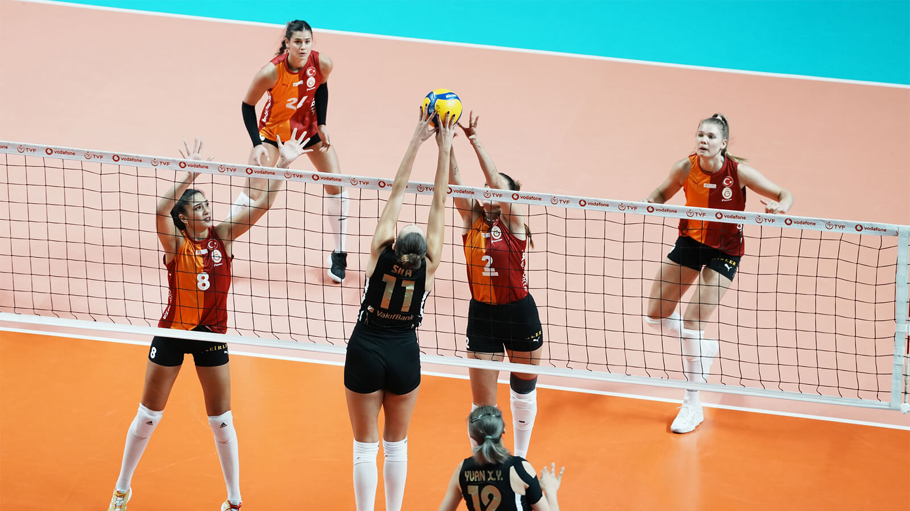 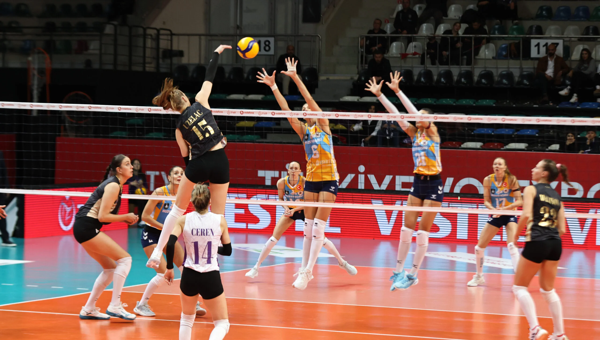Sultanlar Liginde Yıllara Göre Şampiyon Olan Takımlar
| Sezon | Şampiyon Takım |
|---|---|
| 1984-1985 | Eczacıbaşı |
| 1985-1986 | Eczacıbaşı |
| 1986-1987 | Eczacıbaşı |
| 1987-1988 | Eczacıbaşı |
| 1988-1989 | Eczacıbaşı |
| 1989-1990 | Emlak Bankası |
| 1990-1991 | Emlak Bankası |
| 1991-1992 | Vakıfbank |
| 1992-1993 | Güneş Sigorta |
| 1993-1994 | Eczacıbaşı |
| 1994-1995 | Eczacıbaşı |
| 1995-1996 | Emlak Bankası |
| 1996-1997 | Vakıfbank |
| 1997-1998 | Vakıfbank |
| 1998-1999 | Eczacıbaşı |
| 1999-2000 | Eczacıbaşı |
| 2000-2001 | Eczacıbaşı |
| 2001-2002 | Eczacıbaşı |
| 2002-2003 | Eczacıbaşı |
| 2003-2004 | Vakıfbank Güneş Sigorta |
| 2004-2005 | Vakıfbank Güneş Sigorta |
| 2005-2006 | Eczacıbaşı |
| 2006-2007 | Eczacıbaşı |
| 2007-2008 | Eczacıbaşı |
| 2008-2009 | Fenerbahçe |
| 2009-2010 | Fenerbahçe |
| 2010-2011 | Fenerbahçe |
| 2011-2012 | Eczacıbaşı |
| 2012-2013 | Vakıfbank |
| 2013-2014 | Vakıfbank |
| 2014-2015 | Fenerbahçe |
| 2015-2016 | Vakıfbank |
| 2016-2017 | Fenerbahçe |
| 2017-2018 | Vakıfbank |
| 2018-2019 | Vakıfbank |
| 2019-2020 | COVID-19 pandemisi sebebiyle şampiyon belirlenmedi |
| 2020-2021 | Vakıfbank |
| 2021-2022 | Vakıfbank |
| 2022-2023 | Fenerbahçe |
| 2023-2024 | Fenerbahçe |
2024-2025 Sultanlar Ligi Takımları
| Takım Adı |
|---|
| Fenerbahçe 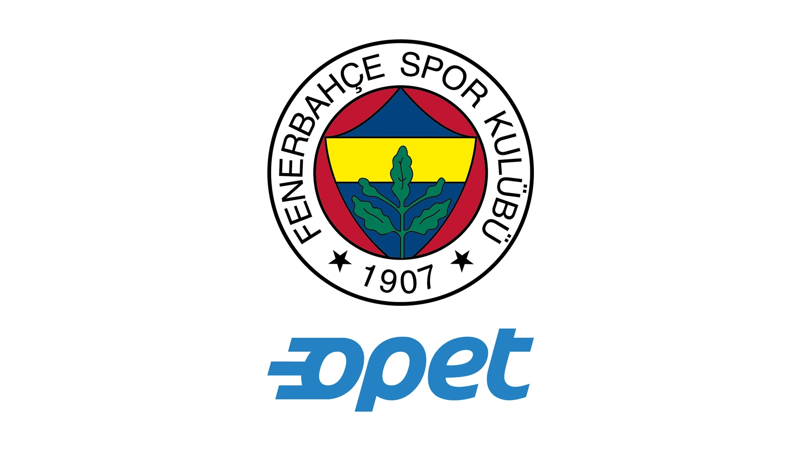 |
| Eczacıbaşı 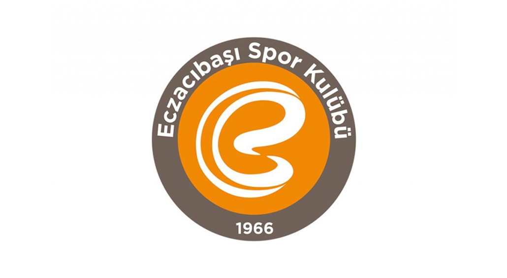 |
| Vakıfbank 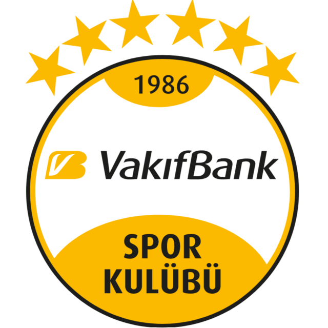 |
| Türk Hava Yolları 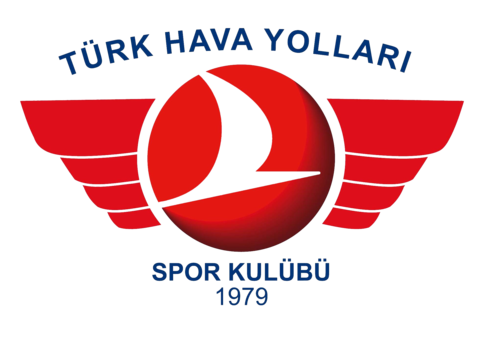 |
| Kuzeyboru 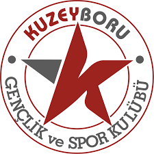 |
| Galatasaray 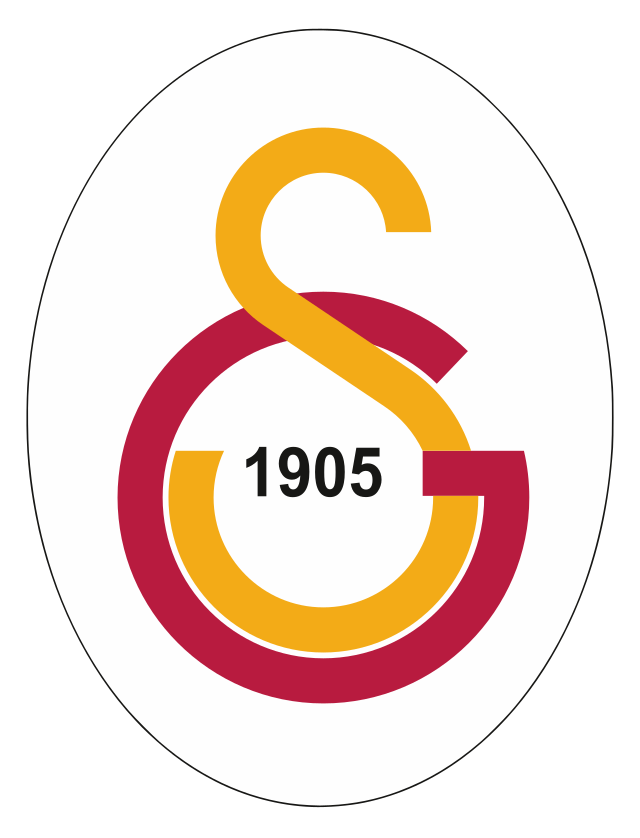 |
| Nilüfer Belediyespor 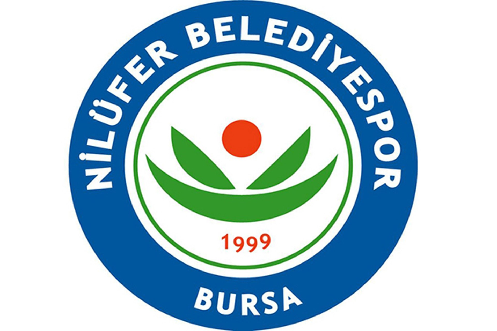 |
| Sigorta Shop 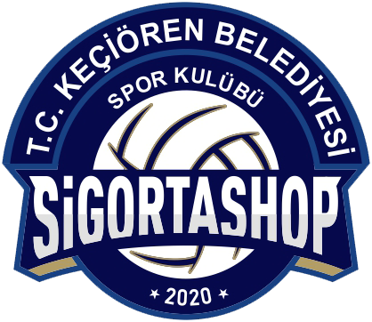 |
| Beşiktaş 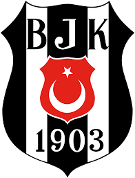 |
| Aydın BŞB 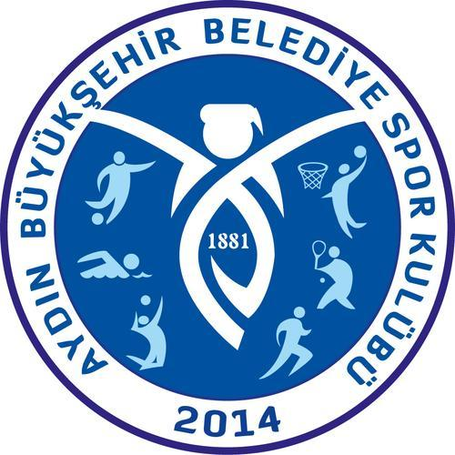 |
| Sarıyer Belediyespor 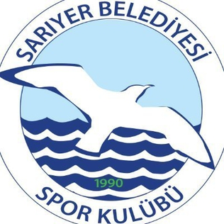 |
| Bahçelievler Belediyespor 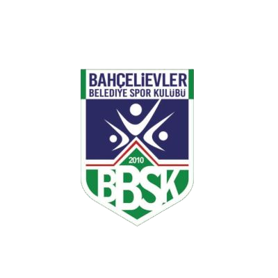 |
İzmir Aras Kargo  |
| Zeren Spor 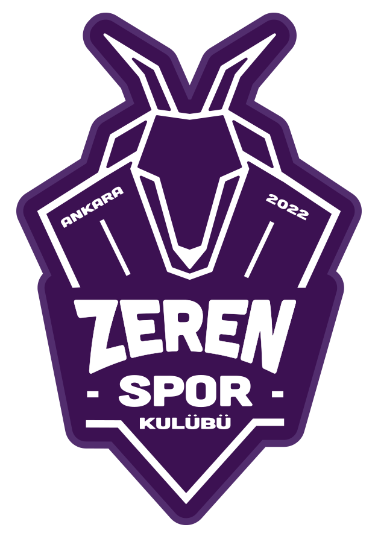 |
Sultanlar Liginde Yıllara Göre En Değerli Oyuncular(MVP)
| Sezon | Ödül Sahibi |
|---|---|
| 2007–08 | Taismary Agüero (ITA) |
| 2008–09 | Seda Aslanyürek (TUR) |
| 2009–10 | Yekaterina Gamova (RUS) |
| 2010–11 | Lyubov Sokolova (RUS) |
| 2011–12 | Esra Gümüş (TUR) |
| 2012–13 | Gözde Kırdar (TUR) |
| 2013–14 | Gözde Kırdar (TUR) |
| 2014–15 | Kim Yeon-koung (KOR) |
| 2015–16 | Kimberly Hill (USA) |
| 2016–17 | Natália Pereira (BRA) |
| 2017–18 | Zhu Ting (CHN) |
| 2018–19 | Zhu Ting (CHN) |
| 2019–20 | COVID-19 sebebiyle iptal edildi |
| 2020–21 | Isabelle Haak (SWE) |
| 2021–22 | Zehra Güneş (TUR) |
| 2022–23 | Melissa Vargas (TUR) |
| 2023–24 | Melissa Vargas (TUR) |